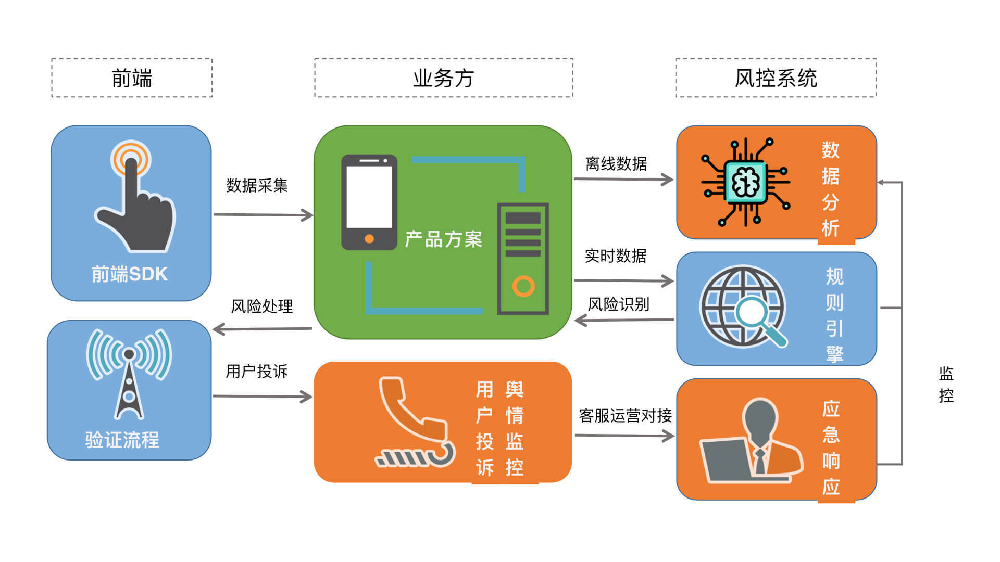
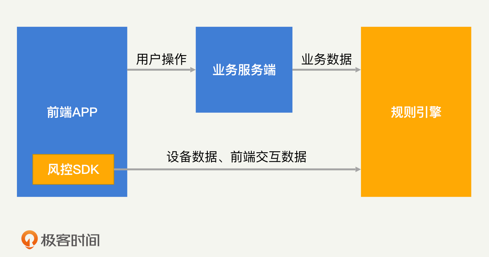
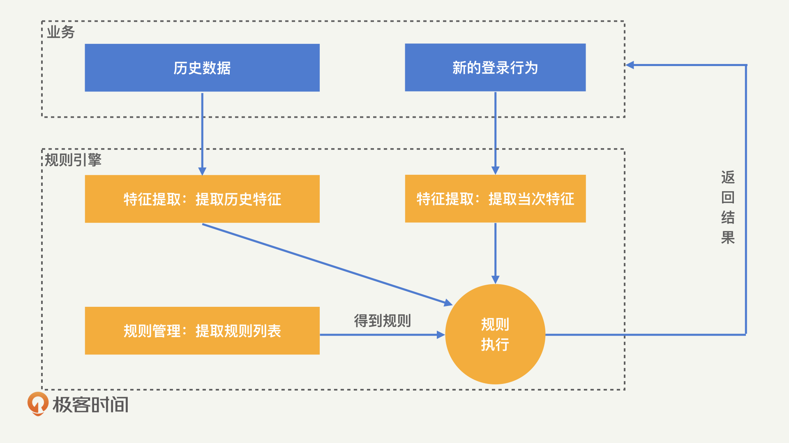
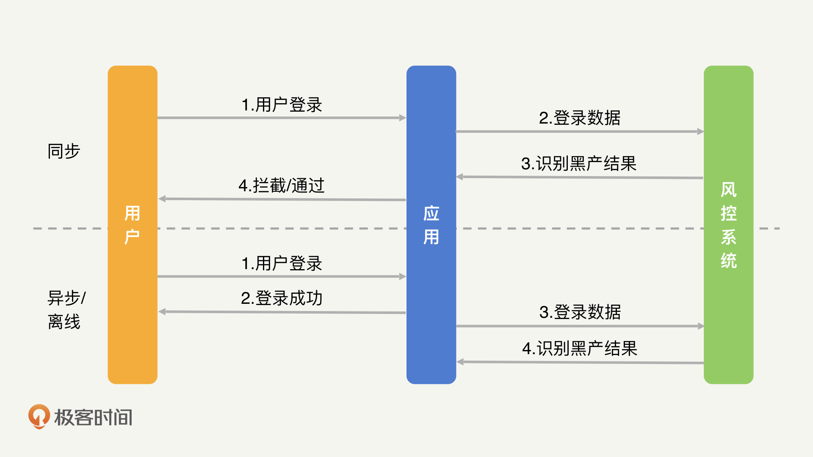
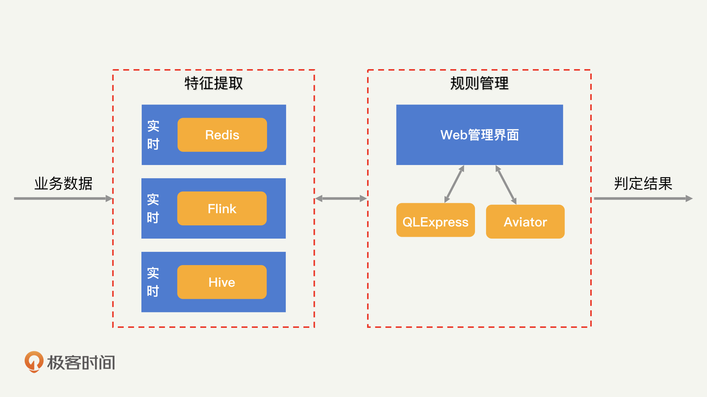
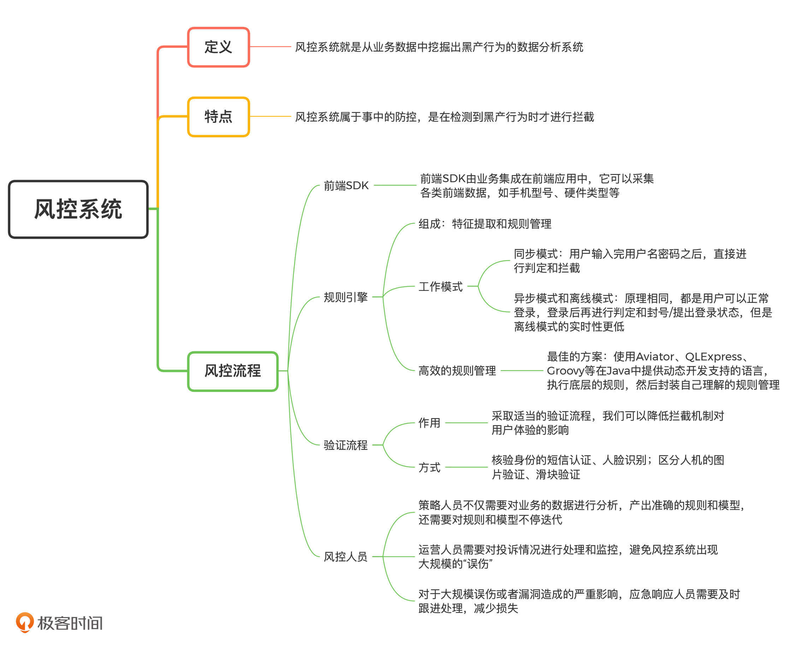

- 00 开篇词 别说你没被安全困扰过.md.html
- 01 安全的本质：数据被窃取后，你能意识到问题来源吗？.md.html
- 02 安全原则：我们应该如何上手解决安全问题？.md.html
- 03 密码学基础：如何让你的密码变得“不可见”？.md.html
- 04 身份认证：除了账号密码，我们还能怎么做身份认证？.md.html
- 05 访问控制：如何选取一个合适的数据保护方案？.md.html
- 06 XSS：当你“被发送”了一条微博时，到底发生了什么？.md.html
- 07 SQL注入：明明设置了强密码，为什么还会被别人登录？.md.html
- 08 CSRF_SSRF：为什么避免了XSS，还是“被发送”了一条微博？.md.html
- 09 反序列化漏洞：使用了编译型语言，为什么还是会被注入？.md.html
- 10 信息泄露：为什么黑客会知道你的代码逻辑？.md.html
- 11 插件漏洞：我的代码看起来很安全，为什么还会出现漏洞？.md.html
- 13 Linux系统安全：多人共用服务器，如何防止别人干“坏事”？.md.html
- 14 网络安全：和别人共用Wi-Fi时，你的信息会被窃取吗？.md.html
- 15 Docker安全：在虚拟的环境中，就不用考虑安全了吗？.md.html
- 16 数据库安全：数据库中的数据是如何被黑客拖取的？.md.html
- 17 分布式安全：上百个分布式节点，不会出现“内奸”吗？.md.html
- 18 安全标准和框架：怎样依“葫芦”画出好“瓢”？.md.html
- 19 防火墙：如何和黑客“划清界限”？.md.html
- 20 WAF：如何为漏洞百出的Web应用保驾护航？.md.html
- 21 IDS：当黑客绕过了防火墙，你该如何发现？.md.html
- 22 RASP：写规则写得烦了？尝试一下更底层的IDS.md.html
- 23 SIEM：一个人管理好几个安全工具，如何高效运营？.md.html
- 24 SDL：怎样才能写出更“安全”的代码？.md.html
- 25 业务安全体系：对比基础安全，业务安全有哪些不同？.md.html
- 26 产品安全方案：如何降低业务对黑灰产的诱惑？.md.html
- 27 风控系统：如何从海量业务数据中，挖掘黑灰产？.md.html
- 28 机器学习：如何教会机器识别黑灰产？.md.html
- 29 设备指纹：面对各种虚拟设备，如何进行对抗？.md.html
- 30 安全运营：“黑灰产”打了又来，如何正确处置？.md.html
- 加餐1 数据安全：如何防止内部员工泄露商业机密？.md.html
- 加餐2 前端安全：如何打造一个可信的前端环境？.md.html
- 加餐3 职业发展：应聘安全工程师，我需要注意什么？.md.html
- 加餐4 个人成长：学习安全，哪些资源我必须要知道？.md.html
- 加餐5 安全新技术：IoT、IPv6、区块链中的安全新问题.md.html
- 模块串讲（一）Web安全：如何评估用户数据和资产数据面临的威胁？.md.html
- 模块串讲（三）安全防御工具：如何选择和规划公司的安全防御体系？.md.html
- 模块串讲（二）Linux系统和应用安全：如何大范围提高平台安全性？.md.html
- 结束语 在与黑客的战役中，我们都是盟友！.md.html
- 捐赠
27 风控系统：如何从海量业务数据中，挖掘黑灰产？
你好，我是何为舟。
在上一讲中，我们讲了如何通过安全的产品方案，提升黑产攻击业务的资源成本，降低应用被攻击的风险。当然，仅靠产品方案是没办法完全抵御黑产的。因为在产品方案中，我们还需要对用户体验进行关注。
比如说，为了拦截黑产盗取他人账号登录，或批量登录自有账号的行为，我们的产品方案可能是，通过加入短信验证、人脸验证和滑块验证来提高登录的门槛。当你在登录一款应用的时候，如果需要进行两次甚至是三次的验证操作，那么，这种糟糕的体验感很有可能驱使你放弃使用这款应用。
为了解决这个问题，在业务安全中，我们会采取折中的方案：如果识别到一次登录行为是异常操作，那么就弹出多次验证；如果识别是正常操作，就让其用简单的用户名密码登录即可。
对于一款热门的应用来说，一天可能要面临上亿次的登录行为。这其中有正常用户的登录行为，也有黑产的登录行为，我们应该如何从海量的登录数据中准确地判定它们呢？这就是IPDRR中的检测，也就是我们常说的风控系统需要完成的事情。
那么风控系统究竟是如何识别黑产的呢？今天，我们就一起来探讨一下。
如何理解风控系统？
简单来说，风控系统就是从业务数据中挖掘出黑产行为的数据分析系统。
我们可以通过对比产品方案来深入理解风控系统。
- 产品方案抵御黑产的方式，是普适性地提高用户的使用成本，不区分用户是否是黑产。因此在产品方案中不存在数据挖掘和分析的工作。
- 在风控系统抵御黑产的过程中，为了不增加正常用户的使用成本，我们必须对黑产用户进行区分，然后告诉业务只对黑产进行拦截，放行正常用户。而区分黑产就需要对海量的业务数据进行分析和挖掘了。
总结来说：产品方案属于事前的防控，是从根本上提高黑产操作的成本；风控系统属于事中的防控，是在检测到黑产行为时才进行拦截。
目前，风控系统的整体框架已经基本成熟了，各个公司的风控系统也都大同小异。一般来说，一个完整的风控系统框架应当包括前端SDK、规则引擎和验证流程。但是，一个完整的风控流程还需要人工进行数据分析、处理用户投诉、监控舆情，并采取应急响应机制。完整的风控流程如下图所示：

下面，我就来讲解一下风控流程中的各个环节。
风控系统如何利用前端SDK采集数据？
想要在风控中做好数据分析，数据当然是越多越好。我们只有尽可能多地采集各类用户的数据，才能够更准确地识别黑产。各类用户数据包括用户身份信息、行为记录、设备类型、鼠标或者屏幕点击轨迹等。
但是，业务在正常的开发过程中，一般不会采集和业务无关的数据（比如设备相关的信息）。为了解决这个问题，风控系统通常会提供一个前端SDK。前端SDK由业务集成在前端应用中，它可以采集各类前端数据，如手机型号、硬件类型等。

除此之外，前端SDK还会计算出一个唯一的设备指纹，通过这个设备指纹，我们就能够实现对设备行为的追踪。
规则引擎如何帮助风控系统识别黑产？
采集到业务数据之后，我们就要对其中的黑产进行识别了。在风控系统中，一次操作行为是来自黑产还是正常用户，是由规则引擎来决定的。那么，规则引擎是如何识别黑产的呢？下面，我来详细讲解一下。
规则引擎会接收到业务提供的原始数据，而想要从中识别出黑产，我们首先需要通过一些统计手段找到其中有用的特征。那什么是“有用的特征”呢？
举个例子，想要从登录行为中识别出黑产，仅仅知道设备指纹是不够的，我们还需要知道，这个设备在最近一段时间内发起了多少次登录请求。这就是特征提取需要进行的工作了。
经过特征提取得到特征之后，我们就需要制定规则对登录行为进行判定。比如说，我们可以定义，一个设备在1分钟内登录5次的行为属于异常行为，应当进行拦截。
这样一来，当有新的登录行为发生时，通过规则引擎，我们就可以直接判定其是否为黑产。规则引擎的识别过程如下图：

那么，应该如何做好一款规则引擎呢？我认为关键在两个方面：采用正确的工作模式、设计高效的规则管理功能。下面，我们就来具体看一下。
1. 正确的工作模式
规则引擎可以分为同步、异步和离线三种模式。下面，我就以登录场景为例，为你解释一下这三种模式的工作过程。
在同步模式下，用户输入完用户名密码之后，需要先经过规则引擎的判定，只有正常用户才能够正常登录，黑产则直接被拦截，不允许登录。
在异步模式下，用户一开始是可以正常登录的，登录后才交由规则引擎判定，如果最终确定是黑产，则会被封号或者踢出登录状态。
离线模式的效果和异步模式一致，不过异步模式通常会在几秒到几分钟的时间内完成判定和处罚，离线模式则需要几小时甚至一天的时间才能够完成判定。
这三种模式的工作过程如下图：

我们知道，实时性越高、对黑产拦截得越及时，黑产所能够获得的收益也就越少。那是不是我们都采用同步模式就好了呢？当然不是。相比于同步模式，异步和离线模式在业务接受度和数据分析能力上都更优。下面，我们来具体分析一下。
首先，同步模式需要侵入到业务的正常流程中，这对于业务来说，一方面会产生较高的接入改造成本，另一方面，也给业务的正常运行带来风险。因此，我们经常会遇到业务不接受同步模式的情况。
其次，实时性越高，我们获得到的信息就越少。以登录的场景为例，同步模式下的拦截行为发生在成功登录之前，所以，我们无法知道用户名密码是否正确。异步和离线是事后的分析，所以我们能够知道用户是否登录成功。显然，连续登录失败比连续登录成功更可疑。因此，用户是否登录成功这个信息，对于我们提升识别准确率会有很大的帮助。
而实时性越低，我们和黑产的对抗优势也就越多。如何理解这句话呢？我们来看实时性最低的离线模式。通常来说，离线模式能慢慢处理和运行几天甚至是几个月的数据。而数据越多，规则引擎的准确率和召回率也会越高，所以我们的优势也就越多。
最后，即使是使用同步模式，我们也需要使用异步和离线模式做数据分析和规则验证，这样才能保障同步模式的判定结果不会出现太大的误伤。
因此，在大部分情况下，我更推荐使用异步或者离线模式，仅在部分没办法做事后的拦截和处罚的业务场景中，我们才会使用同步模式。
举个例子，在提现操作中，提现成功后，钱就已经从公司转移到黑产手里了，我们没有办法追回，因此我们必须采用同步模式，在提现操作前对黑产进行拦截。
2. 高效的规则管理
如果你做过数据分析工作，一定知道同步、异步、离线其实都是数据分析工作中常见的模式，已经有很成熟的工具来为它们服务了，比如：通过Redis完成实时计算；通过Flink完成异步计算；通过Hive完成离线计算等。因此，规则引擎不存在技术上的独特性。
但是，我认为特别“完美”的规则引擎还没有出现。因为规则管理有较高的复杂性和独特性。换一句话说就是，想要新建一条规则并执行是一件很容易的事情，但如何高效管理成百上千的规则，让风控人员和业务人员能够清晰地看到每个规则的效果、准确率和实际意义，是一个很有挑战性的工作。
就拿最出名的开源规则引擎Drools来说吧。Drools定义了一套自有的IF匹配语言DRL，并提供了基于Rete算法的高效规则执行功能。然而，Drools并没有提供十分高效的规则管理工具。
而高效的规则执行功能所能带来的性能提升，其实并不会特别明显。因为规则引擎的复杂度其实在于特征提取。特征提取完成之后，规则管理基本就是简单的IF匹配了。因此，我认为Drools并不是一个适用于风控系统的规则引擎。
除了Drools之外，部分规则引擎也会尝试使用Web界面的方式来降低规则管理的复杂度。比如，在一些开源的风控系统中（比如Nebula），我们可以看到各种用来增加修改规则的Web页面。
但是，各个公司的规则形式，以及各个业务对规则的理解都不尽相同，因此，你在使用这些开源风控系统的时候，总会有部分需求无法实现。所以，我才说“规则管理需要较高的灵活性才能够适用于各个业务”。而矛盾的是，灵活性过高又会大大提高规则管理的复杂性，因此，我们必须慎重把握规则管理的灵活性。
目前来看，我觉得比较好的解决方案是，使用Aviator、QLExpress、Groovy等在Java中提供动态开发支持的语言，来进行底层的规则执行，在此基础之上，我们再去封装自己理解的规则管理。这样一来，我们就实现了灵活性和复杂度的平衡。

当然，你可能会想到使用机器学习来解决规则管理的难题。机器学习相关的内容，我会在后续的课程中详细来讲。
总结来说，规则引擎是风控系统的核心。想要做好一个规则引擎，我们需要思考清楚两件事情：第一，规则引擎以什么样的模式接入业务；第二，如何进行规则管理。
风控系统为什么需要经过验证流程才能拦截黑产？
事实上，当我们使用规则引擎识别出一个用户行为可能是黑产的时候，不能够直接进行拦截。因为规则引擎的判定结果永远存在“误伤”。有时候为了尽可能不漏过黑产，“误伤”的比例会很高。
比如说，当用户因为忘记密码多次登录网站失败的时候，网站就会怀疑这是黑产在进行操作。这个时候，我们如果直接拦截，就会收到大量的用户投诉。
为了解决这个问题，风控系统中加入了验证流程。采取适当的验证流程，我们可以降低拦截机制对用户体验的影响。所以，在上面的例子中，网站会使用滑块验证码来验证你是否是黑产。
基于业务场景的不同，验证的方式还有很多，比如，核验身份的短信认证、人脸识别，区分人机的图片验证、滑块验证等。很多应用都会对存疑的用户和行为施加各种验证流程，来保障用户身份的真实可靠。所以，为了让风控系统成功落地，验证流程是我们不能忽视的一个环节。
有哪些风控人员？
和SIEM一样，风控系统的成功运行离不开各类人员的持续投入。风控人员一般分为策略人员、运营人员和应急响应人员。下面，我就来说说他们是如何推动风控系统落地的。
在规则引擎中，策略人员需要对业务的数据进行分析，产出准确的规则和模型。而且，随着和黑产的对抗升级，策略人员还需要对规则和模型不停迭代。
除了数据分析和规则迭代以外，规则引擎的“误伤”也必然会导致部分用户的不满和投诉。因此，运营人员需要对投诉情况进行处理和监控，避免风控系统出现大规模的“误伤”。同时，因为会有的黑产高调宣扬自己从业务中获利的成功经历，所以，运营人员还需要对黑产的言论和动向进行把控，来感知风险。
最后，对于大规模误伤或者漏洞造成的严重影响，应急响应人员需要及时跟进处理，来进一步减少业务的损失。
总结
好了，今天的内容讲完了。我们来一起总结回顾一下，你需要掌握的重点内容。
一个完整的风控系统需要结合业务全流程。
前期需要通过前端SDK采集设备数据，然后结合业务的离线数据，由算法或者策略人员进行数据分析，整理出具体的规则。接着，通过同步、异步或者离线的方式和业务进行对接，并基于规则对业务数据进行判定。
如果发现了黑产的用户和行为，风控系统还需要提供对应的验证流程，来降低对用户体验的损伤。最后，风控系统还需要保持对用户客诉、黑产舆情的监控，及时发现、响应和处理风险，降低业务的损失。
规则引擎作为风控系统的核心，主要分为特征提取和规则管理两个部分。特征提取可以依靠现有的各类大数据处理框架实现。规则管理则因为各个公司和业务对规则的复杂度和灵活度要求不同，很难有非常合适的解决方案，需要我们根据不同的情况灵活调整和实现。

思考题
最后，我们还是来看一道思考题。
你可以调研并试用一些开源的风控系统，试着思考一下，在这些系统中，有哪些功能对你的业务有帮助。接着，你可以再试着分析一下，业务有哪些痛点是这些系统无法满足的。
欢迎留言和我分享你的思考和疑惑，也欢迎你把文章分享给你的朋友。我们下一讲再见！
© 2019 - 2023 Liangliang Lee. Powered by gin and hexo-theme-book.